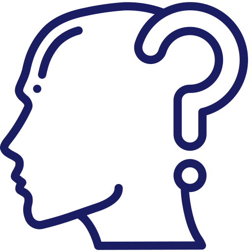
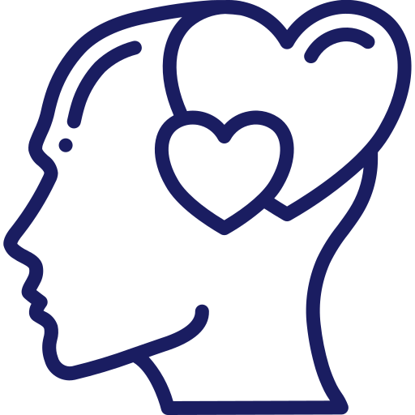
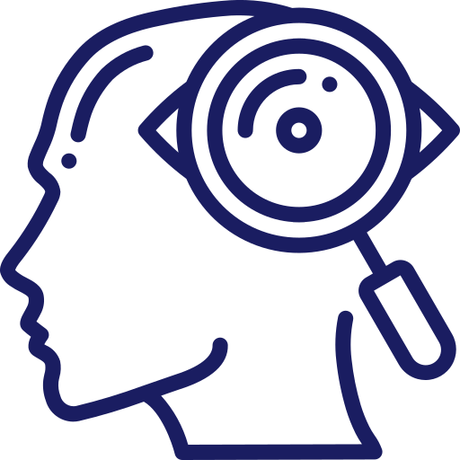

Na konzultaci můžete přijít s různými potížemi, s nimiž si neumíte poradit, nebo v situacích, kdy potřebujete podporu. Společně pak budeme pracovat na nalezení cesty, která pro Vás bude užitečná a léčivá. Zároveň pracuji s tezí, že zkušenosti jsou nepřenositelné a každý člověk je unikát. Není tedy možné zobecňovat nebo pracovat dle předem připravených obecných návodů. Můj terapeutický přístup je velmi individuální a záleží i na Vás samotných, jak budeme postupovat v souladu s Vašimi potřebami a požadavky.
Barbora Pšenicová
terapeutka a konzultantka
Konzultace v rámci psychoterapie považuji za společný prostor, v němž Vám pomohu dojít ke změně a úlevě prostřednictvím pochopení, nebo odstranění pocitů, které vám ztrpčují život.
Kontakt
+420 728 242 002
Služby
- Čeká Vás velká změna v životě a obáváte se jí?
- Stojíte na životní křižovatce a nevíte, jak se rozhodnout?
- Stojíte o to, aby se ve Vašem životě něco změnilo?
- Hledáte odpovědi na své otázky?
- Jste unavení, postrádáte v životě smysl a chybí Vám energie?
- Myslíte si, že zažíváte pocit vyhoření?
- Máte osobní problémy, které neberou konce?
Důležité je, abyste přicházeli s vlastní potřebou své problémy řešit. Jako psychoterapeutka nejsem a nemohu být odborníkem na životy klientů nebo klientek. Určitě u mě tedy nenajdete návod na lepší žití nebo radu, jak si například lépe vybrat.
Kodex
Konzultace jsou placené. Konzultace nemohou být hrazené zdravotní pojišťovnou. Hradit je možné pouze bezhotovostně z bankovního účtu. Své služby fakturuji.
Konzultace se domlouvá předem, ideálně mailem, na konkrétní hodinu dle našich vzájemných možností (i ve večerních hodinách).
Zrušení konzultace je možné bezplatně 48 hodin před domluvenou konzultací. Ukončení terapie je možné kdykoli, záleží na Vás, Vašich možnostech a potřebách. Velmi důležitá je důvěra a samozřejmě má mlčenlivost. Vše, co na společných setkáních řeknete, považuji za důvěrné.
Vycházím hodně ze systemické terapie a konstruktivistických teorií. Procházím výcvikem Terapie v postmoderně a díky tomu mě oslovují různé druhy práce, jako například narativní nebo zakázkový přístup, práce s reflektujícím týmem a další. Vycházím z postmoderních psychoterapeutických škol a pracuji hojně s teoriemi předních psychoterapeutických osobností, jako jsou Michael White, Kurt Ludewig nebo Harlene Anderson. Mou velkou inspirací je práce terapeutky Sabine Vermeire.
Ceník
platný pro rok 2020 Individuální konzultace 650 Kč / hodina V místnosti jste pouze Vy a já Skupinová konzultace 800 Kč / hodina Párové nebo rodinné konzultace Konzultace s reflektujícím týmem Po dohodě s Vámi mohu na konzultaci přizvat další odborníky, kteří po jeho skončení sdělí své postřehy. Mohou Vám tak nabídnout alternativní možnosti.
O mně
V současnosti se vzdělávám v metodách a konceptech human centered design, které pomáhají hledat možnosti a prostor pro zlepšování služeb a zaměřují se především na potřeby klientů a klientek. Od roku 2018 jsem ve výcviku Terapie v postmoderně pod vedením Olgy Kunertové, která je mou odbornou garantkou.
Během své pracovní kariéry jsem měla možnost se vzdělávat v mnoha různých oblastech, prošla jsem kurzem kariérového poradenství, absolvovala jsem školení k tématu sexuální asistence a osobních hranic u osob s hendikepem. Dále jsem absolvovala školení na různá témata z oblasti sociální práce, mám kurz pracovníka v sociálních službách a v neposlední řadě certifikát za školení v rámci narativních přístupů k terapii. Pro neziskové organizace konzultuji a vedu skupinové diskuse a supervize. Absolvovala jsem také kurz Komplexní výcvik v mediaci pod JUDr. Radkou Medkovou.
Velkým přínosem pro mé kompetence bylo podílení se na rozvoji sociálních služeb v ROZKOŠI bez RIZIKA a od roku 2018 v Proximě Sociale. V prvním případě jsem ve spolupráci s kolegyněmi pracovala na standardech kvality sociální práce a zároveň jsem se poslední rok působení v organizaci zaměřila na přestavbu systému sociální podpory pro ženy ze sexbyznysu. Realizovala jsem pilotní vzdělávání klientek (v jehož rámci vznikla svépomocná skupina žen, kterou jsem vedla) zaměřené na sdílení a zásadní témata pro ženy ze sexbyznysu. Věnovala jsem se výzkumu násilí a strukturálního násilí se ženami ze sexbyznysu (tedy i byla účastna některých sezení a pomáhala s analýzou dat a editací textů) a ve druhém případě jsem pak dostala příležitost se výzkumně podílet na projektu, který se věnoval patologickým jevům u mládeže. V rámci výzkumné kariéry jsem pracovala s politickými vězni a mapovala jejich osudy, zkoumala identitu osob vystěhovaných v důsledku průmyslové těžby, připravovala zprávu z vyloučené lokality Janov.
Své schopnosti a vlastnosti jsem měla možnost prozkoumat v rámci školení MBTI charakteru. Vystudovala jsem sociální a kulturní antropologii - soudobé dějiny.